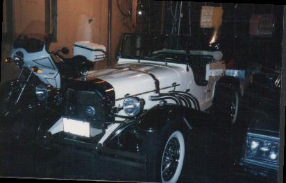

This is a 1929 Mercedes Replica, that I and a friend built in the early80's. It used the suspension parts from a Mercury Bobcat, and I fabricated motor mounts, to install a 302 V-8.... It was a fun project, however the investment in cash alone,was far more that it's worth...:)